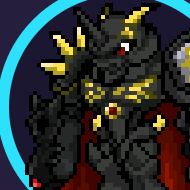
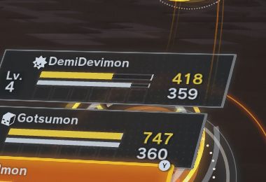
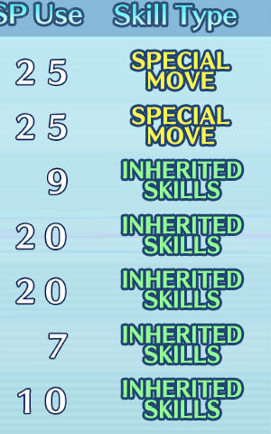
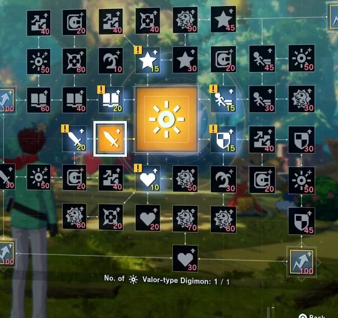
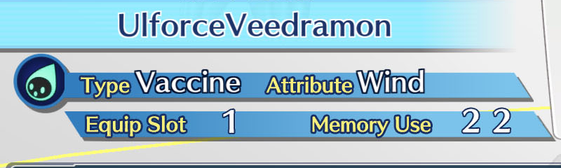
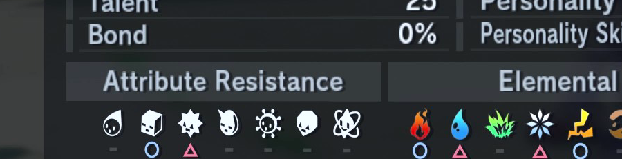

0.1
M
—
Five corner tokens instead of fifteen
2
5
7
10
10
13
↓ three
4
8
10
v1 asked what the app should look like. This asks what can change in one commit, without touching a flow, a layout, or any of the four saved palettes. Every item below is a token family or a single component — and because the four palettes are colour-only copies of one role map, anything that reads roles is automatically correct in all four.
A token family, one component, or one screen's use of it. Never a screen redesign. If it cannot be undone with a single revert, it is still two items.
Colour comes from MaterialTheme.colorScheme or AppPalette. Nothing is added to AppTheme.kt except, at most, one semantic role group for attribute colours. That is what keeps all four palettes correct for free.
VitalArenaShapes has five corner tokens and is bypassed at 27 sites; InstrumentSpacing has six tokens and 4 call sites against 1,685 raw dp values. Most of Waves 0–1 is adoption, not invention.
No navigation changes, no new screens, no content-model edits. The three transfer directions, the default-off Debug gate, and every saved preference keep working exactly as they do.
Attribute and element colours stay identical in all four themes — Vaccine blue, Virus violet, Data green, Free white, Unknown grey — the way element icons are identical in every Digimon game. That is semantics, not a sixth palette.
Pick a palette. Every preview on this page re-skins to it, because the previews read the same roles the app reads. If a proposal breaks in one of the four, it breaks here first.
| Role | Job after this pass | Tamers Lab | VB Lab | VB Arena | Digimon.net |
|---|---|---|---|---|---|
| primary | “Now.” Current tab, selected item, primary action — the only role allowed to mean this one. | #A78BFA | #43D6F3 | #006D39 | #1251D0 |
| primaryDim | Selected fill. The wash behind a selected row, tile, chip or current segment. | #4C3A82 | #19556A | #A7F3C8 | #F6FF00 |
| secondary | Live data only. HP, counters, “measured now” values. Not selection, not decoration. | #2DE1FC | #00BDE3 | #006D39 | #1251D0 |
| outline | Hairlines. 1dp rules, panel strokes, dividers. Never a fill. | #3C3260 | #707070 | #78847D | #6883B5 |
| surface | Panel ground. surface for a panel, surfaceVariant for a raised plate, surfaceContainerHighest for a band. |
#1C1730 | #303030 | #FFFFFF | #FFFFFF |
| onSurface | Three text levels. primary / variant / muted — mapped from the palette's own three. | #F4F1FF | #FFFFFF | #151A17 | #222222 |
Selected states draw a primary fill and an accent rim and label — see PlaceDock.kt:78-80, CharacterEntry.kt:215, TechniqueLoadoutScreen.kt:369-370, DigifarmScreen.kt:624-628. Both roles therefore mean “selected”, so neither reads as a signal, and the palette's own primary/accent hierarchy collapses.
VitalOrange resolves to palette.tertiary, which is Color.White in Tamers Lab and #3152CC blue in VB Arena — an orange token that is never orange. Separately, 38 Color.White / Color.Black literals sit outside the palette in 12 files, so they cannot follow a light theme.
Waves 0 and 1 are invisible-to-subtle and carry most of the “generated” feeling. Waves 2–3 are what make it read as a Digimon product. Wave 4 is the risky surface work and can be dropped without affecting anything above it. Tick any row to add it to your set — the bar at the bottom keeps the running list and copies it as a work order. Pick wave takes a whole wave at once.



No partners stored yet.
Read a cardThe first pass read the references for big gestures. Going back for detail turned up a second layer — mostly small, mostly cheap, and mostly things that already have a home in the code.

418 / 359 — the number is loud, the limit is quiet and smaller. Item 0.6 + 1.4.



| New | What it is | Where it comes from | Item |
|---|---|---|---|
| N1 | Value / limit typography — loud value, quiet smaller limit | TS party bars | 0.6, 1.4 |
| N2 | Semantic skill-kind colours instead of pills | CS skill table | 1.8 |
| N3 | Quarter ticks inside a gauge | TS / CS bars | 1.4 |
| N4 | Catalogue ID plate + stage plate | CS species tab | 2.2, 2.4 |
| N5 | Stacked caption bands under art | CS portrait pane | 2.8 |
| N6 | Δ arrows for stat deltas | TS resistances | 2.9 |
| N7 | Keyword emphasis inside body copy | TS skill description | 1.9 |
| N8 | Explicit scroll position on long lists | CS Field Guide | 3.3 |
| N9 | Corner state ribbon | TS battle | 3.4 |
| N10 | Resource band with a unit glyph | Digivice | 3.5 |
| N11 | Empty state as a template with a next action | all four | 3.6 |
| N12 | One dialog language | CS / TS | 3.7 |
| N13 | Segmented sub-tab band inside a panel | TS resistances | 3.8 |
| N14 | Evolution graph with locks and cost badges | TS Agent Skills | 4.5 |
| N15 | Remove garnish that carries no meaning | — | 0.8 |
| N16 | Text-safety pass (maxLines + overflow) | — | 0.7 |
./gradlew :app:assembleDebug plus the project's existing test suite; no data or preference migration.Tick what you want above, hit Copy selection, and paste it back here — or just name the rows. I will open one branch per wave, one commit per item, and show you Storage and Home captured in all four palettes after Wave 1 — before anything else moves.